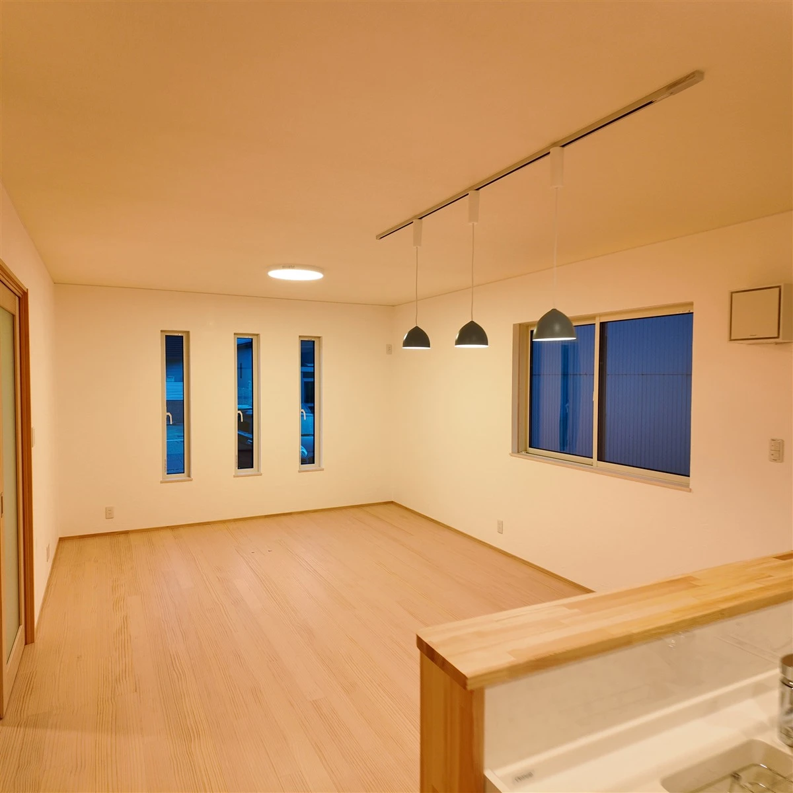
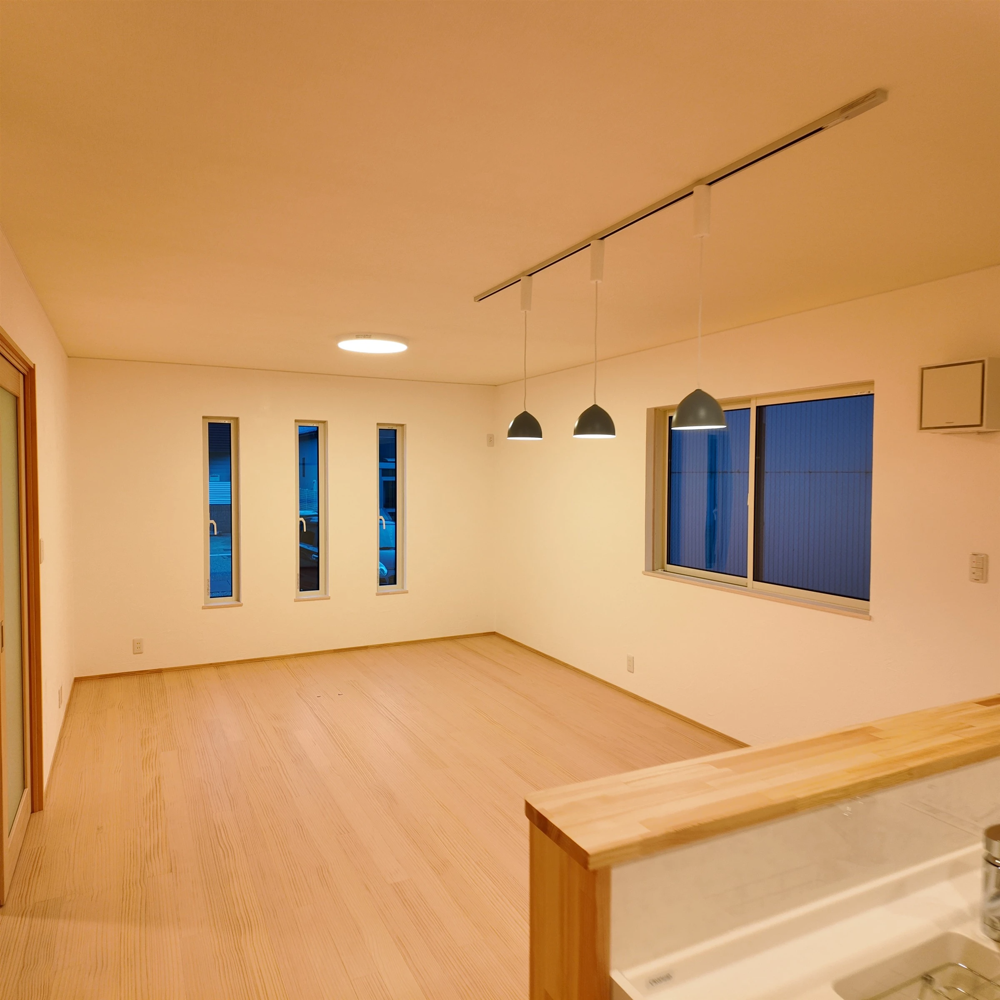
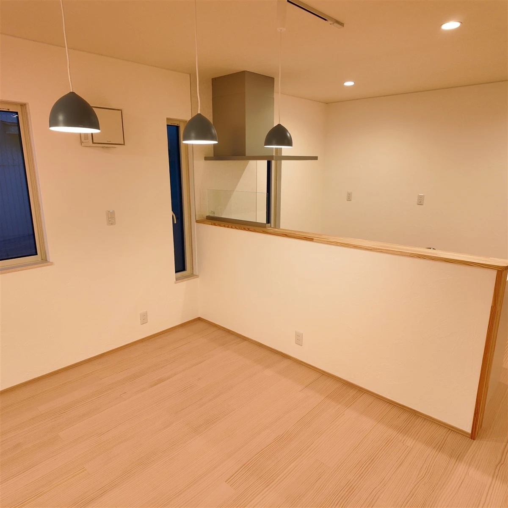
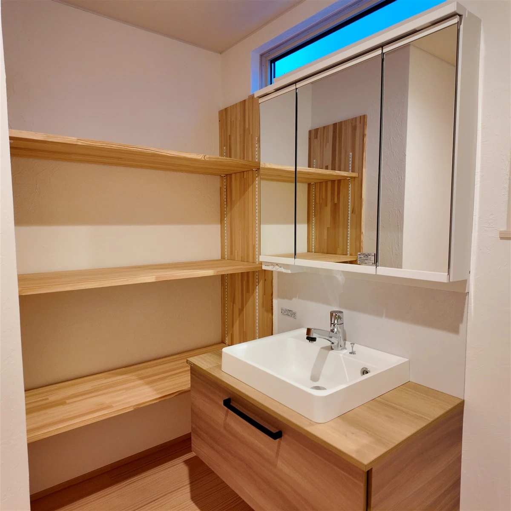

01 ／ LIVING & DINING家族が自然と集まる、
家族が自然と集まる、
ひとつながりのLDK。
食事の時間も、くつろぎの時間も。キッチンからリビングまで続く空間が、家族の会話をやさしくつなぎます。実際に歩いて、その広がりをご体感ください。

AINOS HOUSE · OPEN HOUSE
木のぬくもり。家族とつながる心地よさ。
写真では伝わらない、この家の魅力を体感。
A HOME TO FEEL
やさしい木の表情。
窓から差し込む光。
家族の気配が、ゆるやかにつながる空間。
これからの暮らしを思い描きながら、
お部屋の広がりや素材の質感を、
ぜひ実際の住まいでお確かめください。
フジ創アイノスの完成見学会
HIGHLIGHTS
毎日の暮らしに寄り添う、ひとつひとつの工夫。

食事の時間も、くつろぎの時間も。キッチンからリビングまで続く空間が、家族の会話をやさしくつなぎます。実際に歩いて、その広がりをご体感ください。

お部屋を見渡せる対面キッチンと、木の表情を楽しめるカウンター。日々の使いやすさや、お気に入りの道具を置く場所まで、暮らしの目線でご覧いただけます。

洗面まわりの収納や、お部屋ごとの使い勝手。家族みんなが心地よく過ごすための工夫を、日々の動きをイメージしながらお確かめください。
GALLERY
写真をタップして、詳しく見る ↗
この見学会は終了しました。次回の見学についてはお問い合わせください。
EVENT INFORMATION
あなたらしい暮らしのヒントを、
この住まいで見つけてみませんか。
※ 会場・ご見学についての詳細は、お問い合わせ時にご案内いたします。
COME & FEEL AT HOME
見学についてのご相談は、
どうぞお気軽にお問い合わせください。